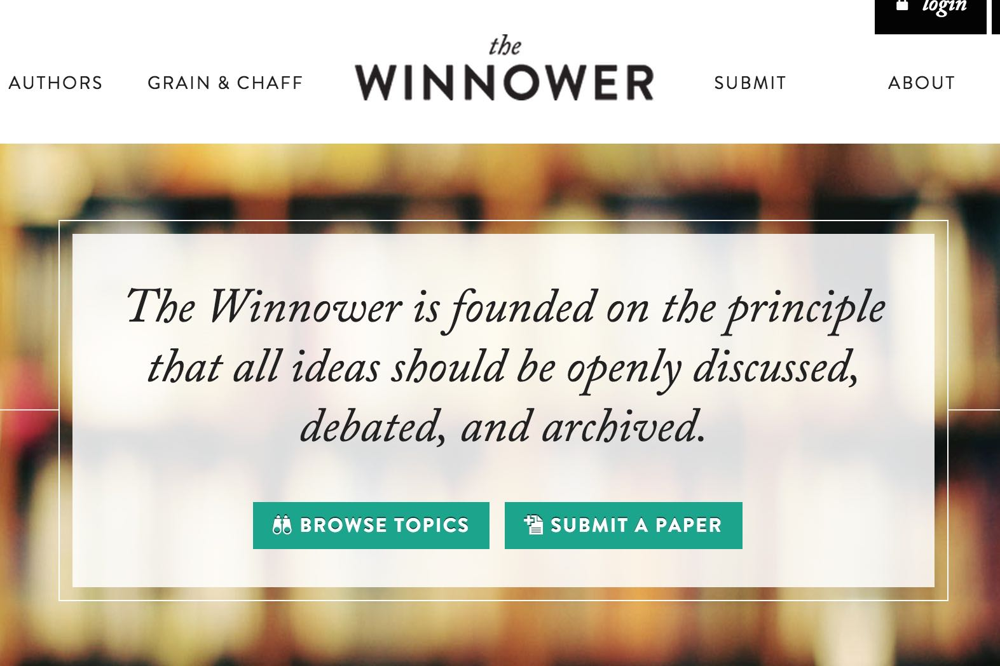
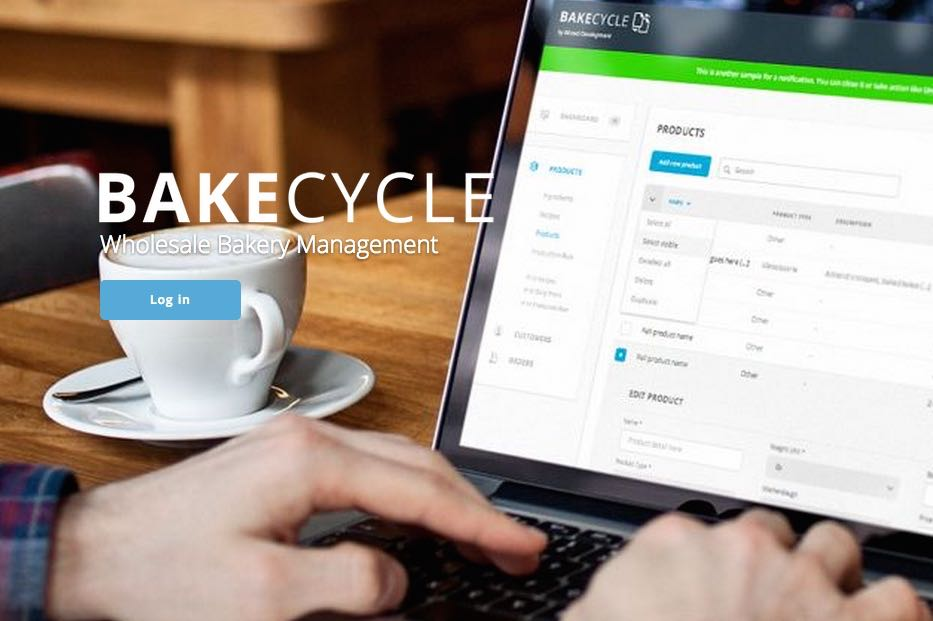
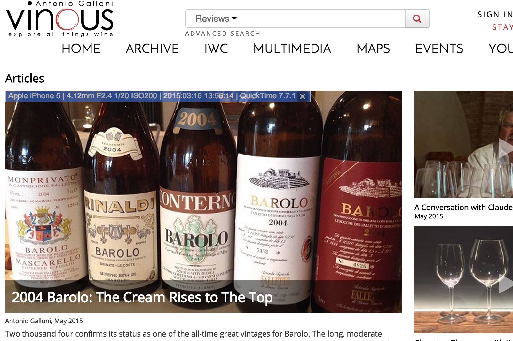

Wizard Development
Developer - The Winnower, BakeCycle
 - Took full ownership of probjects
- Created features from start to finish
- Used multiple frameworks and languages: Ruby, PHP, Javascript, Rails, Wordpress CMS, Angular, React
Barefoot Coders
Developer - Vinous Media
- Reengineered code base to increase readability, scalability, and extendibility.
- Increased development speed by backfilling tests.
- Modified code to adhere to best practices.
Metis
Ruby on Rails - 12 Week Intensive
- Built various applications using Rails and 3rd party APIs.
- Used Thoughtbot’s style guide and best practices including refactoring and design patterns.
- Created dynamic pages through Javascript, JQuery, and AJAX.
- Submitted and reviewed pull requests on GitHub, providing and receiving positive criticisms.
LG Electronics
PSI Analyst
- Analyzed current demand and sales to meet output goals.
- Evaluated logistics data to provide support to reach shipment targets.
- Generated reports for upper management and the CFO to provide information regarding sales status and demand.
- Provided crucial support for LG’s G3 launch; the company’s most successful model to date.
Graduate Rutgers University
Bachelor of Science – Major in Mathematics – Minor in Physics
Honors Thesis – A Study that used methods of Advanced Calculus, Number Theory, and graduate level Probability to prove “What is the probability that two random, independently chosen integers is co-prime?”
- Dean’s List, four semesters.
- Academic Achievement Award, four semesters.